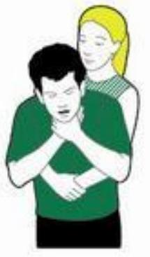

First Aid: Emergency Scenarios and Breathing Difficulties
Difficult First Aid Situations
When it comes to first aid, assessing the situation properly is crucial. Call for help early on.
Incidents involving traffic, fire, electricity or water can put your own life at risk. Be sure it is safe to approach.
Important questions to ask yourself
Safety
- What are the dangers and are you or the casualty still in any danger?
- Have you got any protective clothing or equipment on?
- Is it safe for you to go up to them?
Scene
- What has caused the accident or situation?
- How many casualties are there?
Situation
- What happened?
- How many people are involved and how old are they?
- What do you think the main injuries could be?
Traffic incidents
How to make the area safe
- Call for help - 999 or 112.
- Park safely.
- Set up warning triangles 45 m away in each direction.
- Make vehicles safe by turning off the ignition.
- Stop upright vehicles from moving by applying a handbrake, putting in gear or putting blocks in front of the wheels.
- Look out for physical dangers like oncoming traffic.
- Tell the emergency services if any power lines have been damaged, fuel has been spilt or if any vehicles have hazard signs showing they contain harmful substances.
How to assess the casualties
- Assume that anyone who's been in a road traffic accident could have a neck or spinal injury.
- If possible, treat them in the position you find them in, supporting their head and neck all the time and wait for the emergency services to come.
- Search the area to make sure you don't miss anyone who have may been thrown or who has wandered off.
- Ask bystanders to help.
- If someone's trapped inside or under a vehicle, you'll need to wait for the fire service to get them out.
Fires
How to leave a burning building
- If you see or suspect a fire in a building, set off the first fire alarm you see.
- Call 999 or 112.
- Try to help others out of the building but don't put yourself at risk.
- Close doors behind you to help stop the fire from spreading.
- Use the fire exits and look for assembly points outside.
- Don't use lifts.
What to do if someone's clothing is on fire
If someone's clothing is on fire, remember - Stop, Drop and Roll.
- Stop them from panicking or running or going outside because any movement or breeze will fan the flames.
- Drop them to the ground and wrap them tightly in a fire blanket or heavy material like a coat, curtain, woollen blanket or rug.
- Roll them along the ground to smother the flames until they go out - then treat any burns by cooling them as soon as possible.
- Call for emergency help.
Electrical incidents
Common injuries from electrical incidents
Cardiac arrest - if someone experiences an electric current through their body it may stun them and stop their breathing and heartbeat.
Burns - an electric current can give someone burns where it enters and exits the body.
Fractures and spinal injuries - a direct current (DC) can cause a large muscular contraction that often throws someone and can result in injuries like fractures and spinal injuries.
Electrically charged - an alternating current (AC) causes muscular spasms which can lock their grasp so that they can't let go. This means they are electrically charged so you mustn't touch them or you'll risk electrocution too. Instead you need to break their contact with the source of electricity.
How to break contact with electricity
Don't touch the person. Call for help.
If you can, stop the source of electricity by:
- turning it off
- pulling out the plug, or
- switching off the current at the mains.
If you can't stop the source of electricity, move the casualty away from it without touching them directly. Don't use anything metal as this will conduct the electricity.
- Stand on material like a wooden box, a plastic mat or a book.
- Use something wooden like a pole, broom or stool - nothing metal - to push their limbs away from the source.
- Or loop some rope around their ankles or under their arms - making absolutely sure you don't touch them - and pull them away from the source.
Once you're sure the casualty is clear of the electric current, carry out the primary survey, treat their injuries in order of priority and call 999 or 112 for medical help.
Water incidents
Common conditions caused by water incidents include
Cardiac arrest - if someone's suddenly falls into cold water it can make their heart stop, known as cardiac arrest.
Hypothermia - being in cold water can cause hypothermia.
Shock - being in cold water can make the conditions of shock worse.
Drowning - if someone inhales water this can block the airway causing them to drown.
Heart problems - the effort of swimming can also put a strain on the heart.
How to rescue someone from water
Call for help
Getting the casualty out of the water
- Stay on dry land yourself and throw them a life belt if one is available, or hold out a stick, a branch or rope for them to grab and then pull them out of the water.
- If they can't pull themselves out because they're unresponsive, and it's safe for you to go in the water, wade or swim to the casualty and tow them to the bank, keeping them as upright as you can.
- If you can't get the casualty out of the water safely, wait for the ambulance.
When the casualty is out of the water
- If they're unresponsive, open their airway and check for breathing.
- If they are not breathing, begin resuscitation (CPR).
- If they're responsive, try to shield them from the wind and treat them for drowning and then for hypothermia.
- Take or send them to hospital even if they seem to be better. If you are worried about how serious the casualty's condition is then call 999 or 112 for medical help, if you haven't previousy done so.
Breathing Problems
This section of first aid advice from St John Ambulance covers the most common situations relating to breathing problems. Watch our professional videos, see our easy to follow illustrations and read our expert first aid advice.
We help you to know what to do if someone is choking, whether they are a baby, a child or an adult. Get advice on how to treat someone who is suffering from an asthma attack. We provide information on what to do if a baby or child has croup, give advice for when someone is hyperventilating and how to treat someone for the effects of drowning.
Breathing problems topics:
- Asthma attack
- Choking - adults
- Choking advice for parents (child and baby)
- Croup
- Drowning
- Hyperventilation
Asthma attack
In an asthma attack, the muscles of the air passages in the lungs go into spasm. This makes the airways narrower, making it difficult to breathe.
Sometimes something specific can trigger an attack, such as an allergy, a cold, or cigarette smoke. At other times, someone may have a sudden attack with no obvious trigger.
People with asthma usually deal with their own attacks by using a blue reliever inhaler at the first sign of an attack. But if someone doesn't have an inhaler, or the attack is severe, you may need to help.
What to look for - Asthma attacks
If you think someone is having an asthma attack, these are the five key things to look for:
- Difficulty breathing or speaking
- Wheezing
- Coughing
- Distress
- Grey-blue tinge to the lips, earlobes and nailbeds (known as cyanosis).
What you need to do - Asthma attacks
- First, reassure them and ask them to breathe slowly and deeply which will help them control their breathing.
- Then help them use their reliever inhaler straight away. This should relieve the attack.
- Next, sit them down in a comfortable position.
- If it doesn't get better within a few minutes, it may be a severe attack. Get them to take one or two puffs of their inhaler every two minutes, until they've had 10 puffs.
- If the attack is severe and they are getting worse or becoming exhausted, or if this is their first attack, then call 999/112 for an ambulance.
- Help them to keep using their inhaler if they need to. Keep checking their breathing, pulse and level of response.
- If they lose responsiveness at any point, open their airway, check their breathing and prepare to treat someone who's become unresponsive
Choking adults
Choking is when your airway gets blocked and you can't breathe properly. When someone chokes, the airway can either be partly or fully blocked. If it's a mild blockage, they should be able to clear it themselves by coughing. If it's a severe blockage, they won't be able to cough so without anyone's help they'll become unresponsive.
But if they do become unresponsive, their throat muscles could relax and open the airway enough for you to give rescue breaths - be prepared to give rescue breaths and chest compressions.
Choking adult - what to look for
If you think someone is choking, ask them: 'Are you choking?' to check they're not suffering from something else. Can they speak, cry, cough or breathe?
If they can, they should be able to clear their throat on their own by coughing, so encourage them to cough.
If they can't cough or make any noise, it's serious.
Choking adult - what you need to do
Help clear their throat with these three steps.
Step 1 of 4: Cough it out
- Encourage them to cough. If this doesn't clear the obstruction, support their upper body with one hand and help them lean forward.
Step 2 of 4: Slap it out
- If coughing doesn't work, help the casualty bend forward.
- Use the heel of your hand to give up to five sharp back blows between their shoulder blades.
- Check their mouth to see if there's anything in there and, if there is, get them to pick it out.
Step 3 of 4: Squeeze it out
- If back blows don't work, give up to five abdominal thrusts. Stand behind them.
- Link your hands between their tummy button and the bottom of their chest, with your lower hand clenched in a fist.
- Pull sharply inwards and upwards.
Step 4 of 4: Call for help
- If they're still choking, call for medical help.
- Once you've called, continue steps 2 and 3 - back blows and abdominal thrusts - until what's in there has cleared, help arrives or they become unresponsive.
- If they become unresponsive at any stage, open their airway and check their breathing.
- If they're not breathing, start chest compressions and rescue breaths (CPR cardiopulmonary resuscitation) to try to release whatever's stuck in there. Follow the instructions for treating someone who's unresponsive and not breathing.
Choking advice for parents (child and baby)
Croup in children
Croup is a childhood condition that makes it difficult to breathe. Croup is caused by the inflammation of the windpipe (trachea) and the voice box (larynx).
Children with croup have difficulty breathing, a distinctive barking cough and may have a croaky voice.
Croup can usually be diagnosed by a GP and treated at home. If an attack of croup is severe and doesn't go away, call 999 or 112 for emergency help.
There is a small risk that they may have a rare but similar condition called epiglottitis. The epiglottis is a small flap of tissue at the base of the tongue which keeps food from going down the windpipe when swallowing. If this gets infected and swollen it can block the airway.
If you think a child might have epiglottitis, it's a medical emergency and you need to call 999 or 112 immediately.
What to look for - croup
If you think a child may have croup, these are the four key things to look for:
- Distressed breathing
- A short barking cough
- Rasping noise and croaky voice
- Blue-grey skin
What you need to do - croup
- Stay calm and don't panic, as this will alarm them and probably make the attack of croup worse.
- Sit them on your knee, supporting their back, and reassure them calmly.
- If the croup is severe, call 999 or 112 for emergency medical help.
- If they have a high temperature too, then suspect epiglottitis and call 999 or 112 immediately.
- When you're waiting for help to arrive, keep checking the child's breathing, pulse and level of response.
Drowning
Drowning is when someone is unable to breathe because their nose and mouth are submerged in water, or in another liquid.
When someone's drowning, it may not look like the violent, splashing call for help that most people expect from watching TV. When someone's actually drowning, they won't able to make any noise, so can easily go unnoticed, even if friends or family are nearby.
What to look for - Drowning
If someone has been rescued from drowning you need to check if they're breathing or not. If they aren't breathing, then you'll need to give CPR (cardio pulmonary resuscitation) straight away.
What you need to do - Drowning
- As soon as the casualty has been rescued from the water, check if they're breathing.
- Ask someone to call 999 or 112 for medical help.
- If the person is unresponsive and not breathing, give them five initial rescue breaths before starting CPR.
- Once you've done this, start CPR: 30 chest compressions, then two rescue breaths. Keep giving CPR until help arrives, the casualty regains responsiveness, or you're too exhausted to keep going.
- If they start breathing again at any time, treat them for hypothermia by covering them with warm clothes and blankets. If they recover completely, replace their wet clothes with dry ones.
- Keep checking breathing, pulse and level of response until help arrives.
Hyperventilation
Hyperventilation is excessive breathing, normally caused by extreme anxiety, and can happen at the same time as a panic attack.
When someone is hyperventilating they breathe unnaturally fast or deep. This makes the blood lose more carbon dioxide than usual, which can make them feel weak and dizzy. As they begin to breathe normally again, they should feel better.
It is very rare for children to suffer from hyperventilation, so if you think a child is hyperventilating you should try looking for other reasons why they could be showing these symptoms.
What to look for - hyperventilation
These are the six key things to look for:
- Unnaturally fast deep breathing
- Attention-seeking behaviour or anxiety
- Dizziness
- Feeling faint
- Trembling or tingling in the hands
- Muscle cramps in the hands and feet
What you need to do - hyperventilation
- Speak to them firmly, but be kind and reassuring.
- Take them somewhere that's quiet, as this can help them control their breathing again. If you can't do this, ask any bystanders to leave or turn away.
- Encourage the casualty to see their doctor about how they can learn to prevent and control hyperventilation in the future.
- If you are unsure of their symptoms or if they are not improving, call 999 or 112 for medical help.